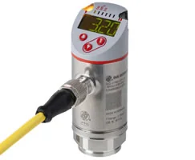
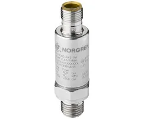
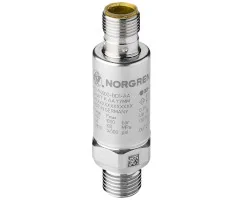
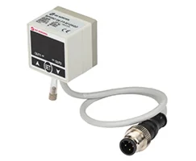
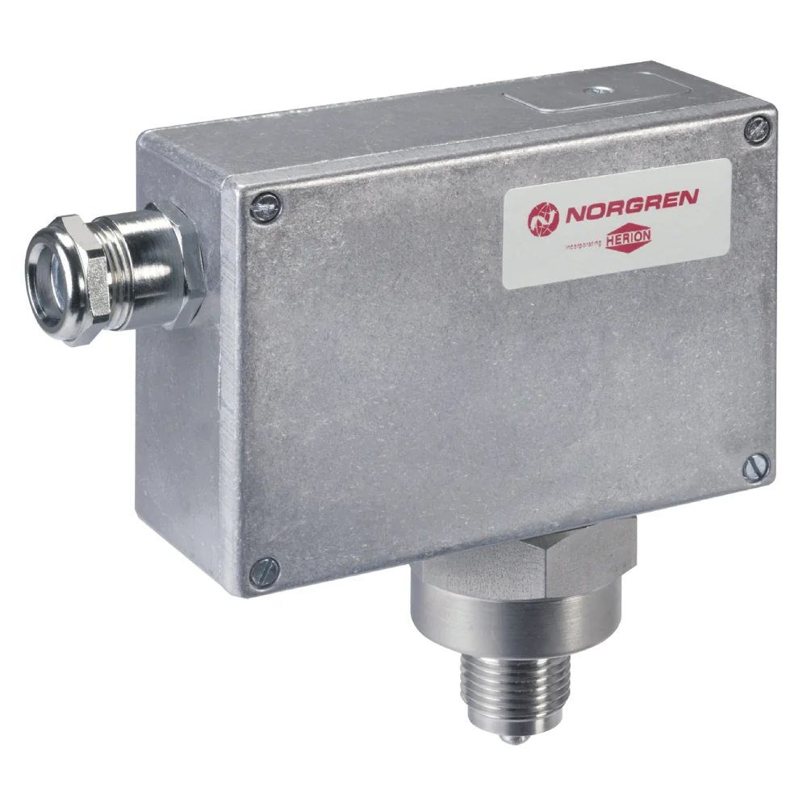
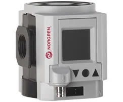

48 mã sản phẩm
Danh sách canonical dẫn về trang chi tiết từng part number.
Cảm biến và công tắc áp suất điện tử (electronic pressure switches & sensors) Norgren đo áp suất và xuất tín hiệu dạng switch, analog (4–20mA, 0–10V) hoặc IO-Link, kèm màn hình hiển thị trên một số dòng. Khi chọn, bạn cần xác định dải đo, kiểu ngõ ra, ren cổng và kiểu đầu nối điện, nên đối chiếu part number với datasheet trước khi báo giá để khớp tín hiệu với bộ điều khiển. Nếu bạn đang nâng cấp từ công tắc cơ sang cảm biến điện tử, hãy gửi thông số hệ thống để chúng tôi tư vấn mã phù hợp. Trang giúp đội mua hàng và kỹ sư tự động hóa tại Việt Nam tra cứu nhanh theo mã, so sánh biến thể ngõ ra và tìm phụ kiện liên quan như cáp, đầu nối M12 và đế lắp. Gửi part number, BOM hoặc yêu cầu tín hiệu để được tư vấn đúng dải đo, ngõ ra và báo giá chính xác.

Với cảm biến áp suất điện tử, hãy gửi dải đo, loại ngõ ra (switch, analog hay IO-Link) và ren cổng. Nếu kết nối vào PLC, cho biết kiểu tín hiệu PLC nhận để chúng tôi chọn đúng biến thể. Phần lớn dòng này dùng đầu nối M12, nên chúng tôi tư vấn cáp tương thích kèm theo. Mọi cấu hình được xác minh theo datasheet Norgren trước khi báo giá để đảm bảo ghép nối đúng với hệ điều khiển hiện có.
Danh sách canonical dẫn về trang chi tiết từng part number.
Datasheet, brochure, installation guide hoặc tài liệu liên quan.
Mã liên quan giúp đặt đồng bộ và tránh thiếu vật tư khi lắp.
Hiển thị 48 mã thuộc category này.
34D Pneumatic/Hydraulic/Allfluid pressure sensor, G1/4, -1-10 bar, IO-Link configurable

54D Electronic pneumatic pressure sensor, G1/8, -1-10 bar, IO-Link configurable

34D Pneumatic/Hydraulic/Allfluid pressure sensor, G1/4, -1-1 bar, IO-Link configurable

34D Pneumatic/Hydraulic/Allfluid pressure sensor, G1/4, -1-1 bar, IO-Link configurable

34D Pneumatic/Hydraulic/Allfluid pressure sensor, G1/4, 0-600 bar, IO-Link configurable

34D Pneumatic/Hydraulic/Allfluid pressure sensor, G1/4, 0-100 bar, IO-Link configurable

34D Pneumatic/Hydraulic/Allfluid pressure sensor, G1/4, 0-250 bar, IO-Link configurable

34D Pneumatic/Hydraulic/Allfluid pressure sensor, G1/4, 0-40 bar, IO-Link configurable


34D Pneumatic/Hydraulic/Allfluid pressure sensor, G1/4, 0-400 bar, IO-Link configurable

34D Pneumatic/Hydraulic/Allfluid pressure sensor, G1/4, 0-250 bar, IO-Link configurable

34D Pneumatic/Hydraulic/Allfluid pressure sensor, G1/4, 0-40 bar, IO-Link configurable

34D Pneumatic/Hydraulic/Allfluid pressure sensor, G1/4, 0-400 bar, IO-Link configurable

34D Pneumatic/Hydraulic/Allfluid pressure sensor, G1/4, -1-10 bar, IO-Link configurable

54D Electronic pneumatic pressure sensor, G1/8, -1-1 bar, IO-Link configurable

34D Pneumatic/Hydraulic/Allfluid pressure sensor, G1/4, 0-16 bar, IO-Link configurable


34D Pneumatic/Hydraulic/Allfluid pressure sensor, G1/4, 0-160 bar, IO-Link configurable


34D Pneumatic/Hydraulic/Allfluid pressure sensor, G1/4, 0-100 bar, IO-Link configurable

20D Electro-mechanical pneumatic pressure switch, G1/4, 0.5-10 bar


34D Pneumatic/Hydraulic/Allfluid pressure sensor, G1/4, 0-600 bar, IO-Link configurable


34D Pneumatic/Hydraulic/Allfluid pressure sensor, G1/4, 0-160 bar, IO-Link configurable




60D Pneumatic/Hydraulic/Allfluid pressure sensor, G1/4, -1-10 bar, IO-Link configurable

60D Pneumatic/Hydraulic/Allfluid pressure sensor, G1/4, 0-100 bar, IO-Link configurable


54D Electronic pneumatic pressure sensor, G1/8, 0-16 bar, IO-Link configurable

34D Pneumatic/Hydraulic/Allfluid pressure sensor, G1/4, 0-16 bar, IO-Link configurable



20D Electro-mechanical pneumatic pressure switch, G1/4, 0.5-6 bar

20D Electro-mechanical pneumatic pressure switch, G1/4, 0.5-10 bar

20D Electro-mechanical pneumatic pressure switch, G1/4, 0.5-6 bar


60D Pneumatic/Hydraulic/Allfluid pressure sensor, G1/4, 0-250 bar, IO-Link configurable

60D Pneumatic/Hydraulic/Allfluid pressure sensor, G1/4, 0-400 bar, IO-Link configurable

60D Pneumatic/Hydraulic/Allfluid pressure sensor, G1/4, -1-25 bar, IO-Link configurable



Tùy mã. Một số dòng có cả switch và IO-Link, hoặc analog. Bạn gửi part number để chúng tôi đối chiếu datasheet và xác nhận ngõ ra trước khi báo giá.
Có. Gửi dải áp suất và tín hiệu cần xuất; chúng tôi tư vấn mã điện tử tương thích theo thông số kỹ thuật.
Tùy số chân và ngõ ra. Chúng tôi xác nhận sơ đồ chân theo datasheet và đề xuất cáp, phụ kiện liên quan phù hợp.
Một số dòng có màn hình hiển thị. Bạn gửi yêu cầu để chúng tôi chọn mã có hiển thị phù hợp.